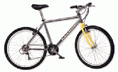
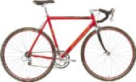
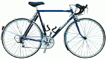
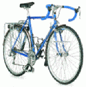
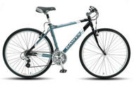

More Bike ArticlesThis article represents my thoughts after many years of riding all kinds of bikes. Sometimes the kind of bikes I recommend for a given purpose aren't exactly what you might expect, but I give my reasons. I don't cover specialist bikes like tandems, trikes, recumbents, or folding bikes.
For each type of use I'll suggest a type of bike, or several types of bike, and give you the rundown on them in terms of gearing, comfort and what you can put on them (provision for mudguards, racks, etc).
Also, I'll mention appropriate models for women. Women often have trouble finding bikes that fit. This is because, first, they are smaller than men, so sometimes they have difficulties finding bikes they can get their legs over. Second, even if the top tube is at the right height, it is often too long, meaning that the woman has to lean too far forward and put too much weight on her hands as she rides. A few custom builders seem to specialize in women's bikes. They are Paul Donohue, George Longstaff, and Chas Roberts (0181 684 3370).
Comfort is mostly due to riding position and the ability of the bike to absorb shock. The saddle plays a significant part in it, but since this is a very individual thing, I won't comment on it here. Generally, a more upright position will be more comfortable than a position where your back is close to being horizontal since the upright position will put less stress on your shoulders, arms, hands, etc. However, the more upright you are, the more wind resistance you have, so you go slower for the same effort. A very important decision you need to make is how much you're willing to trade off speed for comfort. In general, dropped handlebars give you a lower, more stretched out position that straight handlebars, or bars with upward curves in the bars, although this is not always the case.
Shock absorption is affected by quite a few factors, including frame and fork design and materials, width and pressure of tires, and suspension (like suspension forks & seatposts). Generally, the wider and lower pressure your tires, the more shock they will absorb, but the tradeoff is that they will be heavier.
 Marin Bobcat Trail First, let's consider off-road riding. Off-road comes in many flavors, but it basically boils down to smooth or rough. By smooth I mean things like specially built cinder-surfaced paths like canal paths, and reasonably smooth tracks and bridleways. Usually the gradients aren't too steep on these paths. To be honest, just about any bike can handle this, including old three speeds, folding bikes, hybrids, city bikes, and touring bikes. Rough off-road can have any number of obstacles, like logs, big rocks, dropoffs, steps, stream crossings, loose stones, deep mud, or very steep gradients. If this is your kind of off-road, you really need a mountain bike (MTB). Only the low gears and fat knobby tires will take you where you want to go. If you're a beginner and want to get into rough off-road riding, I would suggest getting a decent quality MTB with front suspension (ie suspension forks). I would avoid rear suspension, because unless you pay quite a bit of money, you will only get an overly-heavy bike with rear suspension that works very poorly. These cheap full-suspension bikes are only good for looking cool, and are not well suited to either on or off-road riding.
MTBs have plenty of other uses besides off-road riding. A rigid (with no front suspension) mountain bike can easily be adapted for a wide variety of on-road duties, so I'll be coming back to them again later.
 Specialized Allez If your main interest is going fast on the road, either for racing or fitness training, you want a racing-type bike. Many people call these bikes "road bikes", but I think it's a bit of an odd name, since all bikes can be used on the road. Racing bikes have dropped (curved) handlebars, reasonably fast handing (turning more quickly and easily than other types of bike), and light weight. The handlebars are usually set low and far away to give an aerodynamic position, although this can be altered to meet the needs of the rider by changing stems.
The gearing is high: the true racing bikes have two big chainrings (say 42 and 52) while road bikes that are more for fitness and training will often come with a triple chainset to make steep hills easier. The back sprockets offer closely spaced jumps over a small range (often 12 to 23 teeth). The better racing bikes have frames that absorb shock reasonably well, through the use of things like thin-walled frame tubes and carbon fiber forks. However they have skinny (about 23mm) high pressure tires, so the tires don't absorb all that much shock. They usually don't allow you to attach things like racks or mudguards (fenders).
Women often too feel too stretched out on racing bikes. To race and train you need to be moderately comfortable; being aero isn't everything. Some companies have come out with racing bikes that suit women very well. They are made from smaller (650c) wheels and have much shorter top tubes than standard men's bike. Check out the Trek WSD road bikes, Cannondale Compact road bikes, and the Orbit Mercury Race, or talk to Donohue or Roberts for custom racers. In addition, Deeside Cycles have road bikes made from standard 700c wheels with quite short top tubes. You can also get them custom made with 650c wheels for an additional fee.
 Thorn Audax If you want to want to go moderately fast for long distances, but want to use mudguards (fenders) and carry light luggage, consider an Audax or fast touring bike. They are named after Audax events, which are long-distance organized rides. These bikes usually come with mudguards, and you can easily fit a rear rack on them. They are great for day rides, or for credit-card touring. Since Audax bikes appeal to a specialist audience, they are usually on the expensive side and are of excellent quality. They have shock-absorbing frames and take bigger tires than racing bikes, so they'll offer a somewhat smoother ride than a racing bike. They are also usually set up in a less aero (more upright) position for long-distance comfort. Since Audax events are often hilly and long, they have lower gearing than racing bikes, using a triple chainset.
Women interested in Audax bikes should check out Thorn bikes. The smallest sizes of the Audax are built around MTB wheels and have reasonably short top tubes, and the XTC is one of their excellent selection of 26" wheeled solo bikes. Or you could find out what Roberts recommends.
Now I consider general purpose bikes, or touring/leisure bikes. These bikes are used mostly for road riding, but can handle smooth off-road riding as well, so they have fatter tires than the above bikes. You can fit racks and mudguards on them, and they often come equipped with them. They are designed with varying degrees of upright posture, from a bit more upright than racing, to bolt upright.
 Orbit Gold Medal A traditional touring bike has 700c wheels and dropped bars. The bars are usually set reasonably high so the rider isn't stooped over too far, however many people still find themselves too stretched out on a touring bike. Touring bikes have a long wheelbase (distance between the centers of the two wheels) for a steady ride over long distances and heel clearance for bags on the rear rack. Most have cantilever brakes, which provide clearance for wide tires as well as mudguards. They have triple chainrings and often use non-compact mountain bike chainsets (i.e. largest chainring 46 or 48 teeth). Their rear cogsets have a big range of cog sizes (usually 11 to 28) with a bigger gap between cog sizes than on racers. They are usually not very cheap, but they are quite strong and will last a lifetime if treated well.
Now there are some touring bikes with 26" mountain bike wheels, such as the Dawes 1. Down, the Roberts Rough Stuff, the Orbit Romany, and the Thorn Nomad, XTC, or EXP. Some of these, especially the Roberts Rough Stuff, the Orbit Mercury, and all of the Thorns can be bought with short top tubes to suit women and other small riders who want a more upright position.
I wouldn't recommend a bike with dropped bars to a beginner. I feel that straight handlebars, which put your shifters and brakes within easy reach, and give you a (usually) more upright position than dropped bars, are more beginner friendly (although less aerodynamic and therefore slower) than bikes with dropped bars. Some people argue that bikes with straight bars aren't nearly as comfortable as bike with drop bars because the straight bars only allow you one hand position. This is true, but the simple addition of bars ends (things you attach to the ends of your handlebars that point forward) give you a good variety of hand positions and allow you to stretch out a bit to get a little bit more aerodynamic. Bar ends with a curve or sharp bend in them offer even more options for hand positioning.
 Dawes Discovery A hybrid bike has 700c wheels and handlebars that are either straight or have a slight curve to bring the hand position higher. They have mountain-bike style shifting and brake levers, which are easily accessible from the standard hand placement, and so are very beginner-friendly. They usually have MTB-style V-brakes, which stop you quickly and usually have room to fit mudguards. Your typical hybrid looks like the Dawes Discovery bike pictured. You can get hybrids that are specialized from here. Some are more like mountain bikes with 700c wheels: they have somewhat knobbly tires and suspension forks. (In my opinion, you shouldn't buy a hybrid with a suspension fork. If you're riding off-road that rough, just buy a mountain bike.) Some are specialized more towards fast riding by having very smooth tires, low handlebars, and faster turning, more like that of a racing bike. Unless you get a one of these fairly specialized ones, a hybrid is a good general-purpose bike, suitable for riding to work, going out on country lanes for fun and exercise, and riding along reasonably smooth off-road tracks. The better ones are fairly light and quite tough and can even be used for loaded touring, if you add racks and mudguards.
Women who are sufficiently tall to straddle the top tubes on these bikes usually get on with them, since the handlebars are (usually) reasonably high and close to the saddle. At the worst they might require a stem change (see Bodge your bike to fit). Women who are too short should look to mountain bikes instead.
If you decide to go for one of these, there are several things you can do to make them better for longer road riding. If you end up getting one of the pseudo MTBs, it would be a good idea to swap the somewhat knobby tires they come with for smoother tires. If it's possible, you should put bar ends on the bike to allow for a change of hand position.
Marin Bobcat Trail Finally, we come back to mountain bikes. Many people discount them as possiblilities for touring/leisure use, thinking that they are heavy and slow. Well, if you buy a cheap department store MTB, it will be heavy, but in fact MTBs with good quality light frames are relatively inexpensive. It's the volume of sales at work for you here. Knobbly MTB tires are certainly slow and heavy, but if you swap them for some narrower slick tires (such as 1.5" Specialized Nimbus or Schwalbe Marathon) you'll get a tire that rivals any touring bike tire for low weight and rolling resistance. The only way in which MTBs are slow is that they have low gearing: the biggest chainring is usually 42 teeth. Unless you can pedal exceptionally quickly, this limits your top pedaling speed to something like 25mph (of course you can coast much faster!). If you don't think you'll be wanting to pedal your bike faster than this, there's no reason to avoid a mountain bike.
If you want a MTB for general-purpose use, rather than rough off-road riding, then I suggest that you get a MTB without a suspension fork. Unfortunately they can be hard to find: the industry would have you believe that if you're going over anything rougher than glass-smooth tarmac you need suspension forks. Not so: the fatter tires of an MTB (even the smooth 1.5" tires I have recommended) suffice plenty well on roughly-paved roads and smoothish off-road, such as gravel-surfaced tracks. For general-purpose riding, a suspension fork is a liability, not an asset. It adds weight, expense, and complexity: it's yet another thing that can go wrong on your bike. It also adds to the desirability of the bike for thieves. Make the effort to find a good quality MTB with a rigid fork. Go for a fork made out of cromoly steel. Avoid high-tensile steel as this is the lowest quality bike frame material and is overly heavy.
Women are usually reasonably well-served by MTBs, as they have low top tubes and can be fitted with short stems to bring the handlebars close enough. However, there is still quite a range of top tube lengths, and women who are having a hard time finding a suitable bike may consider a women-specific bike like the Trek WSD models.
Many midrange mountain bike have all the fittings you'd need to attach racks and mudguards. The more sporty MTBs have bars that are pretty low and far from the saddle, but with a change of stem (see Bodge your bike to fit) the bars can be brought much higher and closer to you to put you more upright. You can get the tires swapped for slicks to give you much less rolling resistance. The brakes are V-brakes, which have great stopping power. Because mountain bikes are so popular, they are often very good value for money. Using a mountain bike as a general purpose touring/leisure bike is often a very good solution for smaller people and women. See An inexpensive touring/leisure bike for info on what to look for. Also see A beginner's guide to buying a mountain bike for advice on finding one that fits.